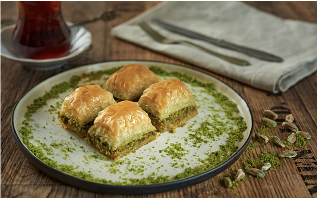

1 package phyllo dough (16 oz)
2 cups walnuts or pistachios, finely chopped
1 cup unsalted butter, melted
1 cup granulated sugar
1 cup water
1/2 cup honey
1 tsp ground cinnamon
1 tsp lemon juice
1/2 tsp vanilla extract (optional)
1/2 cup almonds or hazelnuts, finely chopped (optional)
Preheat oven to 350°F (175°C).
Mix nuts and cinnamon in a bowl.
Brush the baking pan with melted butter. Layer 8 sheets of phyllo, brushing each with butter.
Sprinkle a thin layer of nut mixture. Add 2 sheets of phyllo, brush with butter, and repeat until nuts are used up.
Finish with 8 more sheets of phyllo, brushing each with butter.
Cut baklava into diamond or square shapes with a sharp knife.
Bake for 45-50 minutes until golden brown.
While baking, combine sugar, water, honey, and lemon juice in a saucepan. Boil for 10 minutes, then let cool.
Pour syrup over hot baklava. Let cool completely before serving.
Enjoy your homemade baklava!
Click here to go back home.